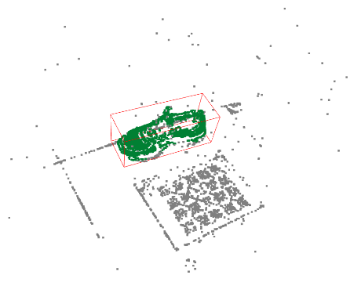

Song Jin（宋瑾）
Hi, My name is Song Jin. Now I am an algorithm enginner of HIKVision in Han Zhou. Before that I get my
bachelor and master degree from Harbin Institute of Technology. My research interests are computer vision,
visual slam and 3D reconstruction. I believe augmented reality will be the future, I want to create the future and enjoy this process.
Experience and Education
- 2013.9-2017.9, Harbin Institute of Technology, Bachelor.
- 2017.9-2020.1, Harbin Institute of Technology, Master.
- 2020.4-2021.2, HikVision Research Insititute, Algorithm Enginner.
Skills
- Computer Vison, SLAM, 3D Vision, Sensor Fusion
- Multiple View Geometry, Numeric Optimization
- C/C++, Eigen, OpenCV, ROS
Projects
3D Reconstruction of Indoor Enviorment with iPhone DToF Lidar
（In progress）Reconstruct the indoor scene on the device with the onboard imu, camera and the
low-resolution DToF liadr to achieve a globally consistent geometry and high-quallity texture.
We use the onboard imu and camera to compose a visual-inertial slam to obtain the very accuracy 6DoF pose in real-time and imporve the DToF depth map quality by multiple view stereo method such as COLMAP, Finally all the high resolution depth map and global consistency pose graph was fused to the final mesh.
Stereo Camera On-Chip Self-Calibration without Feature Extraction
The damage of the stereo camera extrinsic will cause the depth map quality decrease fast. In order to solve this problem stably, we create an algorithm could automatically perform self-calibration without extracting any feature point from the scene.
The depth map density ratio and depth value error was used as the optimization criterion to loop refine rotation error in extrinsic parameters. After the recalibration, the average epipolar aligment error less then 0.5 pixel and the process time about 30s in Hisi3559 chip.
Autonomous Visual Localization Algorithm for Amphibious Robot in Filed Enviorment
Amphibious robots moving in the field enviorment would be affected by changes of light, rugged terrain and violent movements. We try to implement a visual-inertial localization system for amphibious robot to solve all these problems.
Use the information field and the robot movement direction to obtain the best viewing angle pointing to enough feature points in the scene. At the same time, the camera exposure is automatically adjusted to make the image contain enough information, and finally the more stable SIFT feature is used to resist the optical flow tracking failure caused by the movement.
Autonomous State Estimation and Mapping in Unknown Environments with Onboard Stereo Camera for MAVs
We create an onboard vision-based autonomous state estimation and mapping systems for MAVs’ navigation in unknown environments.
The state estimator is developed to provide MAV’s current pose on the basis of the extended Kalman Filter by using image patch features. Inverse depth convergence monitoring and local bundle adjustment are utilized to improve the accuracy. The mapping algorithm for navigation is developed according to a real-time stereo matching method for 3D perception.
Other Projects
Games101: Introduction for Computer Graphics
Song Jin
In this course,I learned some basic concepts of graphics, including the implementation of rasterization rendering pipeline and ray tracing rendering pipeline.

2019 Alibaba CaiNiao Global Technology Challenge in Intelligent Volume Measurement
Song Jin, Sun JiaBi, Zhu FenFang
we use the Structe-from-motion method to obtain the sparse point cloud of the measured object, and then use the calibration board to align the point cloud to the ground. Finally, the volume of the object is calculated by filtering the final point cloud.
2018 JDD Global Digitalization Challenge in Multi-Sensor Fusion For Autonomous Driving
Song Jin, Sun JiaBi, Wang Xin
We try to fuse multi-sensor information such as lidar, GPS, odometer and IMU to implement an global localization framwork for autonomous driving.
Aerial Grasping Based on VR Perception and Haptic Control
Song Jin, Wu YaQi, Sun JiaBi, Zhu Fenfang
This work implements a aerial grasping task by using a hexrotor with a 3-DoF light-weight manipulator. A VR operating platform consisting of a UAV ground station and an aerial vehicle is build, and kinematic modeling and mapping algorithms related to the manipulater’s grabbing task is conducted.